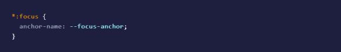
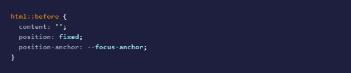
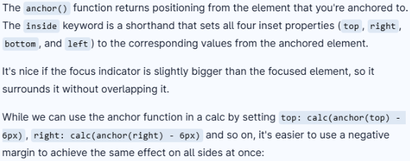

Vandaag te horen gekregen met wie we in de groep zitten en bij welke opdrachtgever.
Lees meer...
Ik zit samen met Romy, Ocean en Thomas. Wij gaan een website moeten maken voor Videlio.
We hebben meteen contact geprobeerd te krijgen met iemand van Videlio.
In een reactie terug in de mail hebben we het nummer van Roger gekregen. Hem kunnen we bellen rond 14:00.
Om 13:30 even met Sanne gezeten en besproken wat ons plan voor nu is.
Afgesproken dat we iedere maandag om 12:00 weer even bij elkaar komen.
Om 14:00 hebben we Roger gebeld. We hebben afgesproken om morgen elkaar in Amsterdam te zien bij café Louie Louie.
19-05-2026
Om 11:00 hebben we in het café met Roger gesproken.
We hebben onze vragen kunnen stellen en hebben een duidelijker plan voor de website.
Het afspreken in Amsterdam is eenmalig. De vrijdagen gaan we naar Utrecht.
Dit is bij Roger thuis om 13:30.
20-05-2026
Vanochtend op school aangekomen.
We waren net een beetje opgestart. Romy zat bij een workshop en ik zou bijna naar de workshop van Cyd gaan, toen het brandalarm ineens af ging.
Romy had de workshop over testen bij Leonie al gevolgd en mij het belangrijkste daaruit verteld. Ik denk dat het dan geen nu heeft als ik straks alsnog die workshop volg.
Ik heb de pagina gemaakt voor de projecten waar Videlio aan heeft meegewerkt en deze gemerged in de main.
Ik ga nu verder met de informatie over deze projecten en die verder erin verwerken.
Morgen sturen we onze vragen voor vrijdag door naar Roger. Dan kan hij zich vast voorbereiden.
21-05-2026
Om 09:30 had ik de workshop Doelen voor de gebruikers, wanneer is je project een succes. Van Sanne.
Hier heb ik een aantal handige dingen uit meegenomen om met de groep te bespreken.
Aantekeningen:
To do
Doing
Done
Controleren
WCAG 2.1 AA niveau
B1 taalniveau, zodat de informatie voor een breed publiek begrijpelijk is.
Opschrijven wat er in het bestand te vinden is.
Altijd een werkwoord in een functie.
Kwaliteitskenmerken wanneer ons project goed is:
- Responsive
- Screenreader leest het gebruiksvriendelijk voor
(zelf kunnen bepalen wat de screenreader voorleest)
(begint bij het overzicht (gebruiker hoort wat er te vinden is op de website) en niet de header)
- Vormgeving aantrekkelijk voor ziende gebruikers
- Gebruiker voelt zich aangesproken en thuis bij eerste indruk van de website. “Ik doe er ook toe”
Ik ben wat meer informatie gaan zoeken over de projecten waar Videlio aan heeft meegewerkt.
Om 11:30 had ik de workshop Het ontwerpproces. Van Vasilis.
Aantekeningen:
“Je kan een opdrachtgever ook laten denken dat hij wel wil wat hij eigenlijk niet wil”
Als veel informatie blijft missen maak je gewoon een prototype waar de opdrachtgever mee verder kan.
Maken wordt niet door iedereen als onderzoek gezien, maar het is wel onderzoek.
Doordat je je idee maakt krijg je nieuwe inzichten die je weer kan maken en testen.
Als je iets maakt kan je dit ook delen met anderen en hun ideeën toepassen.
Conclusie: Maak veel dingen
En toon dat aan elkaar.
Nog even verder gewerkt aan de pagina's voor de projecten.
De pagina voor LumCane en Project Viziere zijn nu af. Alleen nog de pagina voor OV Knoop Eindhoven.
Morgen gaan we naar Utrecht voor het o.a. testen van de website.
22-05-2026
Vandaag in Utrecht geweest bij Roger thuis. Peter was daar ook.
Besproken wat we nu hebben en wat zij willen.
Vooral Peter heeft enorm veel ideeën met wat hij wil, maar hoe zij dit willen gaan doen weet hij niet. Het wordt al erg snel één grote brei en erg onoverzichtelijk.
We hebben wel een duidelijker beeld met wat ze willen.
We hebben een lijstje voor onszelf en gaan daar volgende week mee verder.
26-05-2026
We hebben kort besproken wat we met Sanne willen bespreken.
Ik heb op de homepage de tekst geschreven voor Videlio, waarbij de gebruiker zich meteen aangetrokken voelt.
Tijdens werken lopen we meteen tegen vragen aan. Deze schrijf ik op in een gezamenlijk document voor komende vrijdag.
Om 12:00 gesprek met Sanne gehad.
Windows high contrast. Je kan doen dat de gebruiker zelf de kleuren kan kiezen. Mocht een gebruiker de kleur rood niet zien, kan hij dit aanpassen naar een andere kleur.
Lijstje maken met de visuele beperkingen.
Vrijdag vragen testen met andere VIPs.
Ik moet m'n eigen doel met JavaScript nog gaan doen.
Lijstje oogaandoeningen:
- Ablatio reitnae
- CVI (Cerebrale Visuele Stoornis)
- Charles Bonnet syndroom
- Glaucoom
- Macula-degeneratie
- Myopie
- NCL (Neuronale Ceroïd Lipofucsinosis)
- Nystagmus
- RP (Retinitis pigmentosa)
- Stargardt
- Syndroom van Usher
- Staar
Met Lighthouse in inspect kan je zien wat goed is en wat beter kan in je website.
Nog een taakverdeling gemaakt. Ik doe het deel verhalen en media.
27-05-2026
Vandaag wil ik verder met verhalen en media.
In Figma een schets gemaakt voor de pagina. De anderen waren het daar mee eens.
De workshop WCAG & wetgeving bij Leonie gevolgd.
Dit gedeeld met de groep.
Dit gaan coderen in html en css.
Later pas het idee, door ocean, gekregen om het een beetje te laten lijken als spotify. Zo kan de gebruiker meteen op afspelen klikken en hoeft dan niet een extra tablad te openen.
28-05-2026
Gister heb ik wat opgezocht over geluid met javascript.
Dit wil ik vandaag toepassen voor de podcasts.
We gaan wat we hebben overzetten naar Astro.
01-06-2026
Vandaag verder gegeaan met de audio.
Om 12:00 weer gesprek gehad met Sanne.
Het is handig als we ons ontwerp hiërarchie aanpassen/bijwerken.
Ik kom verder met de JavaScript voor de audio, maar ergens zit er nog een error waardoor hij het niet kan ophalen. Morgen is Jad er en wil ik hem om hulp vragen.
Rond 14:00 gebeld met ocean en dit besproken en aangepast.
Van Videlio hun nieuwsbrief gekregen voor meer content. Ik wil voor nu dan verder met het stuk verhalen, aangezien dat nog leeg is.
02-06-2026
Jad heeft nog een gesprek in de ochtend. Tegen de middag wil ik hem wat vragen over het javascript voor de audio.
Voor nu ga ik dan verder met de verhalen van o.a. de VIPs.
Jad ging ineens vroeg naar huis. Maar Romy en ik kwamen er samen uit dat je in Astro audio moet importeren en was het toch nog gelukt.
Verder gewerkt aan de podcasts.
'S middags even naar Trello gekeken en een nieuwe planning gemaakt.
Preview bij pagina Verhalen
Titel verhaal
Responsive maken
03-06-2026
'S ochtends workshop javascript gehad van Jad. Na de workshop was er nog tijd en legde hij classes uit. Dit kon ik beter begrijpen dan wat we daarvoor hadden gedaan.
Verder gewerkt aan de pagina voor de podcasts.
De afbeeldingen werken nog niet.
Jad zei dat ik de assets in public moet zetten voor het werkt.
Dit heb ik gedaan. Bij romy op haar scherm werkt dit wel, maar bij mij nog niet.
04-06-2026
De afbeeldingen werken nu ook bij mij.
Tussen de titels van de podcasts en de progress baar + button heb ik meer ruimte geplaatst, zodat alles netjes naast elkaar staat op dezelfde lijn.
Ook staan de podcasts nu mooi in het midden en niet links aan de pagina geplakt.
Om 11:30 workshop javascript van victor gehad.
Het ging over react en astro. Wat gebruik je wanneer wel of niet.
Hij vertelde eerst veel over react en ging eerst het andere team helpen.
Later ging hij het pas over astro hebben.
'S middags zijn we naar de Voorhoede gegaan.
'S avonds had ik afgesproken met Jennifer (kennis). Zowel voor het testen van mijn website voor HCD als het testen van de website voor Videlio.
Hierin kwamen een aantal punten uit en die heb ik gedeeld met mijn groep.
05-06-2026
Vandaag waren we weer in Utrecht naar Roger.
Peter kon er niet bij zijn, maar kon er telefonisch bij zijn.
Ik heb aantekeningen gemaakt tijdens het gesprek.
Tijdens het gesprek kon ik ook benoemen wat Jennifer gister opviel en hoe Roger en Peter dat ervaren.
08-06-2026
Voor mijn taken maak ik apart een taakverdeling voor mezelf. Door de bomen zie ik het bos niet meer.
Ik maak een nieuwe layout voor de podcasts.
Om 12 gesprek gehad met Sanne.
Hier een lijst gemaakt voor wat nu de prioriteiten zijn.
Om 13 test met Ihab.
We kwamen er achter dat niet alle linkjes in de footer werken.
Agenda en verhalen is nog niet af, maar dit wisten we.
Verder kon Ihab er goed en makkelijk doorheen. Hij kon alles vinden.
Het was best een basic website volgens hem, maar daardoor ook makkelijk te navigeren.
09-06-2026
Om 09:30 workshop javascript voor beginners van Jad.
Hij heeft me laten zien hoe je een loop kan maken. Zo hoef ik niet alle buttons apart te benoemen.
We hebben met elkaar afgesproken wat we nu willen met de homepage, ook na de test gister met Ihab.
Nog niet alle linkjes in de footer doen het.
Ook behandelen we het VIP-lab 2x bij het kaartje Loop gerust binnen en VIP lab.
Dit voegen we samen.
Ik ben verder gaan werken aan de pagina podcasts.
Deze is nu af.
Morgen wil ik kijken naar anchor positioning focus voor tab.
10-06-2026
Vandaag hebben we minder tijd door The web you want.
Ik ga vandaag verder met de pagina verhalen, zodat deze echt af is.
Morgen zou ik dan kunnen kijken naar anchor positioning.
Verhalen is nu zo goed als af.
Ik heb voor wat ik nu heb een pull request gedaan. Als deze oke is maak ik het alleen nog responsive.
Om 13:00 The web you want.
11-06-2026
Ik schoof aan vanaf 11:00 vanwege een sollicitatie.
Vandaag kijken naar de anchor positioning.
http://polypane.app/blog/css-only-floating-focus-with-anchor-positioning/
De anchor positioning is nieuwere css.
Dit gaat samen met :focus-visible om het te animeren.
Zo kan bijvoorbeeld een balkje “vliegen” van knop naar knop wanneer de gebruiker met tab door de pagina gaat.
Anchor positioning verandert de tabvolgorde niet.
De tabvolgorde wordt bepaald door de HTML en tabindex.
Anchor positioning kan wel de focus zo zetten dat het lijkt alsof de focus een rout aflegt.
Het element geef je eerst een anchor-name.

Dan kan een ander element zich daarna positioneren ten opzichte van die anchor.
Dat gaat dan met position-anchor:


Voorbeeld:
HTML:
<nav>
<a href="">Één</a>
<a href="">Twee</a>
<a href="">Drie</a>
</nav>
<div class="bla-bla"></div>
CSS:
a:focus-visible {
anchor-name: --focused;
}
.bla-bla {
position: fixed;
position-anchor: --focused;
top: anchor(top);
left: anchor(left);
width: anchor-size(width);
height: anchor-size(height);
border: 3px solid yellow;
border-radius: 10px;
pointer-events: none;
transition:
top 0.3s;
left 0.3s;
width: 0.3s;
height: 0.3s;
}
Als je dan nu tabt schuift de gele rand van link naar link.
Anchor positioning is wel nieuw en wordt nog niet in alle browsers ondersteund.
In de index.css heb ik van:
.button {
background-color: var(--highlight-color);
color: var(--button-text);
border: none;
padding: 1rem;
font-size: var(--paragraph-font-size);
border-radius: 1.5rem;
cursor: pointer;
transition: background-color .3s linear;
:focus-visible {
outline: 3px solid var(--highlight-color);
outline-offset: 5px;
border-radius: 4px;
box-shadow: 0 0 0 6px rgba(250, 234, 7, 0.2),
0 0 12px rgba(250, 234, 7, 0.15);
transition: outline-offset 0.1s ease, box-shadow 0.1s ease;
}
:focus:not(:focus-visible) {
outline: none;
}
}
De animatie met tab is gelukt :)
Ik ga nog even verder met pagina's responsive maken.
12-06-2026
Om 12:45 op de hva gesprek met Roger en Peter.
15-06-2026
Anchor positioning ook toegevoegd aan de navbar.
Er stonden 2 gele puntjes. Deze heb ik weg gekregen.
De punten die uit de test met Jennifer kwamen gedeeld en ook in een gedeeld document geschreven.
De enige pagina die niet responsive was, was radio.
Deze heb ik responsive kunnen krijgen.
Om 12:00 gesprek met Sanne.
Hier zag ik dat mijn anchor positioning ineens niet meer animeerde.
Na pauze verder gegaan met de footer op de radio-pagina.
Deze is nu wel responsive, maar de footer zit halverwege de pagina. Op alle andere pagina's gaat dit wel goed.
16-06-2026
Voor mezelf een to do lijstje gemaakt voor vandaag.
De puntjes op de i in de code doen de anderen. Ik ga verder met de design rationale voor komende vrijdag.
Om 11:00 had ik even het eindgesprek met Leonie over de herkansing van HCD.
Deze heb ik gehaald! :)
Naast de design rationale ben ik ook ontwerpen gaan maken voor flyers.
Zowel voor ideeën voor Videlio zelf, als voor tijdens het presenteren vrijdag.
'S middags nog even met Sanne gezeten voor de animatie van de anchor position.